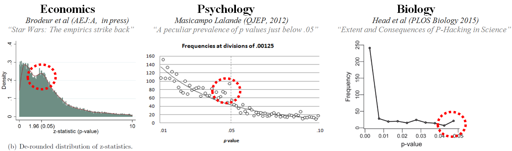

53. Limiti dell’inferenza frequentista#
In questa sezione della dispensa abbiamo esaminato il metodo “tradizionale” per il test di significatività dell’ipotesi nulla (NHST). Comprendere la logica alla base dell’approccio NHST è essenziale poiché questo è stato l’approccio predominante alla statistica inferenziale fin dalla sua introduzione all’inizio del XX secolo e la maggior parte dei ricercatori ancora si affida a questa procedura per analizzare i dati. Tuttavia, recentemente, l’approccio NHST è stato oggetto di aspre critiche, poiché molti ricercatori hanno iniziato a pensare che questo approccio possa creare più problemi di quanti ne risolva. Pertanto, è importante conoscere le critiche mosse alla procedura inferenziale NHST all’interno della comunità scientifica. In questa sezione esamineremo alcuni dei dubbi sorti riguardo a questo approccio.
53.1. L’uso del valore-\(p\) nel mondo della ricerca#
Nel suo articolo “Statistical Errors” (2014), Nuzzo evidenzia i limiti dell’approccio NHST nella pratica scientifica [Nuz14]. Infatti, sebbene il valore-\(p\) sia stato introdotto da Ronald Fisher negli anni ‘20, egli non lo ha mai concepito come un test formale. Invece, Fisher lo considerava uno strumento informale per valutare se l’evidenza empirica fosse significativa in un senso colloquiale, ovvero meritevole di attenzione. In pratica, Fisher suggeriva di assumere un’ipotesi nulla e di calcolare la probabilità di osservare un risultato altrettanto estremo o più estremo di quello trovato, se il risultato fosse completamente dovuto alla sola variabilità campionaria. Sebbene sia possibile calcolare il valore-\(p\) tramite una procedura matematica, per Fisher esso era solo uno strumento da utilizzare all’interno di un processo decisionale non numerico, in grado di combinare le evidenze empiriche attuali con le conoscenze pregresse del ricercatore. In altre parole, il valore-\(p\) rappresentava uno strumento da utilizzare all’interno del processo decisionale, non la conclusione del processo decisionale stesso.
Verso la fine degli anni ‘20, Jerzy Neyman e Egon Pearson, rivali di Fisher, formalizzarono le procedure di decisione statistica con l’obiettivo di renderle “rigorose e oggettive”. In particolare, introdussero i concetti di potere statistico e di falso positivo, ma non utilizzarono la nozione di valore-\(p\) come aveva fatto Fisher.
Le divergenze tra i tre autori portarono a un acceso dibattito, in cui Neyman criticò il lavoro di Fisher come matematicamente “peggiore dell’inutilità”, mentre Fisher definì l’approccio di Neyman “infantile” e “orribile per la libertà intellettuale dell’occidente”.
Durante questo dibattito, altri autori iniziarono a scrivere manuali di statistica per fornire uno strumento di lavoro ai ricercatori. Poiché molti di questi autori non erano statistici e avevano solo una comprensione superficiale della distinzione tra i vari approcci, crearono un sistema ibrido che utilizzava il valore-\(p\) proposto da Fisher all’interno del “sistema rigoroso” proposto da Neyman e Pearson. È in questo contesto che la soglia di un valore-\(p\) pari a 0.05 venne definita come “statisticamente significativa”.
Tuttavia, dal punto di vista storico, il valore-\(p\) proposto da Fisher aveva un significato molto diverso da quello che viene attribuito oggi nel mondo della ricerca. Come abbiamo visto, il valore-\(p\) era solo uno strumento informale utilizzato da Fisher all’interno di un processo decisionale più ampio, e il suo uso all’interno del sistema ibrido creato dai manuali di statistica era privo di giustificazione e fondamento.
Nel 2016 l’American Statistical Association ha pubblicato un articolo nel quale si esprime una grande preoccupazione per l’uso inappropriato che viene fatto del valore-\(p\) nella pratica scientifica odierna [WL16]:
\(P\)-values do not measure the probability that the studied hypothesis is true, or the probability that the data were produced by random chance alone. Researchers often wish to turn a \(p\)-value into a statement about the truth of a null hypothesis, or about the probability that random chance produced the observed data. The \(p\)-value is neither. It is a statement about data in relation to a specified hypothetical explanation, and is not a statement about the explanation itself.
L’articolo prosegue affermando che:
Scientific conclusions and business or policy decisions should not be based only on whether a \(p\)-value passes a specific threshold. Practices that reduce data analysis or scientific inference to mechanical “bright-line” rules (such as “\(p < 0.05\)”) for justifying scientific claims or conclusions can lead to erroneous beliefs and poor decision making. A conclusion does not immediately become ‘true’ on one side of the divide and ‘false’ on the other. Researchers should bring many contextual factors into play to derive scientific inferences, including the design of a study, the quality of the measurements, the external evidence for the phenomenon under study, and the validity of assumptions that underlie the data analysis. Pragmatic considerations often require binary, ‘yes-no’ decisions, but this does not mean that \(p\)-values alone can ensure that a decision is correct or incorrect. The widespread use of “statistical significance” (generally interpreted as \enquote{\(p \leq 0.05\)}) as a license for making a claim of a scientific finding (or implied truth) leads to considerable distortion of the scientific process.
53.2. \(P\)-hacking#
La pratica del \(P\)-hacking rappresenta la principale fallacia associata all’utilizzo del valore-\(p\) ed è nota anche come “\(P\)-hacking”, “data-dredging”, “snooping”, “fishing”, “significance-chasing” o “double-dipping”. Secondo Uri Simonsohn, docente presso l’Università della Pennsylvania, il \(P\)-hacking consiste nel tentativo di provare diverse ipotesi finché non si ottiene il risultato desiderato. Ad esempio, si potrebbe dire: “Quel risultato sembra essere stato ottenuto attraverso il \(p\)-hacking, gli autori hanno eliminato una delle condizioni in modo che il valore-\(p\) complessivo fosse inferiore a 0.05” oppure “Lei è una \(p\)-hacker, controlla sempre i dati mentre vengono raccolti”.
Questa pratica ha l’effetto di trasformare uno studio esplorativo, che dovrebbe essere sempre interpretato con cautela, in uno studio (apparentemente) confermativo, il cui risultato appare “robusto”, ma che in realtà ha una probabilità pressoché nulla di essere replicato in studi successivi. Secondo le simulazioni di Simonsohn, il cambiamento di poche decisioni nel processo di analisi dei dati può aumentare fino al 60% il tasso di falsi positivi in un singolo studio.
Il \(P\)-hacking è diffuso soprattutto negli studi che tentano di dimostrare piccoli effetti usando dati molto rumorosi. Un’analisi della letteratura psicologica ha mostrato che i valori-\(p\) riportati dagli psicologi tendono a concentrarsi su valori appena superiori alla soglia minima dello 0.05. Questo risultato può essere interpretato come conseguenza della pratica del \(P\)-hacking: i ricercatori eseguono molteplici test statistici fino a trovare uno che risulta “statisticamente significativo” e poi riportano solo quello. Come mostra la figura seguente, questa pratica non riguarda solo la psicologia, ma è diffusa in tutti i campi della ricerca scientifica.

53.3. Critiche al valore-\(p\)#
Il valore-\(p\) è stato paragonato a creature noiose e ostinate come le zanzare, ai vestiti nuovi dell’imperatore, ovvero alla tendenza di non voler riconoscere evidenti problemi, ma preferire di far finta di nulla, o ad un intellectual rake sterile, che non porta alcun frutto. Si è anche ironizzato sul fatto che la procedura di statistical hypothesis inference testing venga chiamata così solo per l’acronimo che produce.
Il valore-\(p\) incoraggia un modo di pensare errato, spostando l’attenzione dal problema centrale della ricerca, ovvero la forza della manipolazione sperimentale, alla dimostrazione di una falsa ipotesi che si sa a priori essere falsa (l’ipotesi nulla). Ad esempio, uno studio con più di 19.000 individui ha dimostrato che coloro che incontrano il loro partner online hanno una probabilità minore di divorziare (\(p <\) 0,002) e sono più soddisfatti della loro vita matrimoniale (\(p <\) 0,001) rispetto a chi non si è conosciuto online. Questo può sembrare un risultato interessante, ma senza considerare la dimensione dell’effetto, ovvero il tasso di divorzio che scende dal 7.67% al 5.96% e l’aumento dell’indice di soddisfazione matrimoniale da 5.48 a 5.64 su una scala a sette punti, il risultato perde di interesse. In generale, la domanda cruciale non è “c’è un effetto o no?” ma piuttosto “qual è la dimensione dell’effetto?”.
53.4. L’effetto sperimentale è esattamente nullo?#
Una delle critiche più frequenti alla logica di verifica delle ipotesi statistiche riguarda l’assunzione irrealistica che l’effetto della manipolazione sperimentale sia “esattamente” nullo. Ad esempio, la fisica ci insegna che lo spostamento di un grammo di massa in una stella distante qualche anno luce dalla Terra può influenzare il movimento delle molecole di un gas sulla Terra [Bor14]. Questo ci suggerisce che ogni manipolazione sperimentale produca, in qualche modo, un effetto. Pertanto, secondo Andrew Gelman, il problema non è dimostrare falsa l’ipotesi nulla, ovvero che la manipolazione sperimentale non produca alcun effetto, ma piuttosto valutare se la dimensione dell’effetto è sufficientemente grande da avere un impatto pratico e se l’effetto sia riproducibile. In questo senso, la logica di verifica dell’ipotesi nulla può essere problematica, soprattutto quando si lavora con piccoli campioni e piccoli effetti, come nella maggior parte degli studi in psicologia, poiché può portare ad una sovrastima della dimensione dell’effetto e ad una visione binaria del risultato (vero/falso), invece di concentrarsi sulla stima non distorta della dimensione effettiva dell’effetto.
53.5. Attenti al valore-\(p\)!#
Consideriamo il seguente problema. Eseguiamo un \(t\)-test per due campioni indipendenti e sottoponiamo a verifica l’ipotesi nulla dell’eguaglianza delle due medie. Sia \(\alpha = 0.05\). Otteniamo un valore-\(p\) di \(0.04\). Qual è la probabilità che i due campioni siano tratti da distribuzioni con la stessa media?
(a) \(19/20; \quad\) (b) \(1/19; \quad\) (c) \(1/20; \quad\) (d) \(95/100; \quad\) (e) sconosciuta.
La risposta corretta è: (e) sconosciuta. La statistica frequentista definisce le probabilità dei dati condizionatamente alle ipotesi (assunte come vere). Non consente di stabilire la probabilità di un’ipotesi.
53.6. La crisi della riprodicibilità dei risultati della ricerca#
Negli ultimi anni, la mancanza di replicabilità dei risultati della ricerca - inclusa la ricerca psicologica - è diventata un tema di grande rilevanza. In questo contesto, è stato evidenziato che alcuni aspetti del metodo scientifico, in particolare il concetto di valore-p e la pratica di verificare la significatività dell’ipotesi nulla (NHST, Null Hypothesis Significance Testing), potrebbero contribuire a questa “crisi della ricerca scientifica”. Un’analisi più approfondita di questo problema è stata fornita da Gelman [Gel16], il quale sostiene che la pratica della NHST sia intrinsecamente problematica. Infatti, essa incoraggia il ricercatore a cercare di rigettare un’ipotesi “fantoccio” (straw-man) che è certamente falsa a priori o, almeno, poco interessante dal punto di vista scientifico, a favore di un’ipotesi alternativa che il ricercatore preferisce. In generale, sembra più ragionevole affermare che la differenza tra due condizioni sia molto piccola, piuttosto che affermare che sia esattamente uguale a zero.
Spesso nei libri di statistica viene trasmesso il messaggio che la NHST sia una forma di “alchimia” che cerca di trasformare la casualità in una sorta di certezza, con l’uso di termini come “confidenza” e “significatività” [Gel16]. Il processo di raccolta dei dati, analisi e inferenza statistica che ne segue viene poi riassunto in una conclusione espressa in termini di valore-p e di intervallo di confidenza che escludono lo zero. Tuttavia, ciò può dare l’impressione errata che il ricercatore abbia una comprensione completa delle proprietà del fenomeno in questione. Il problema principale della NHST è che spesso produce risultati “statisticamente significativi” in situazioni in cui le caratteristiche del fenomeno non giustificano la conclusione a cui il ricercatore arriva. Questo può portare alla non replicabilità dei risultati della ricerca.
La comunità degli statistici ha evidenziato come la non replicabilità dei risultati delle ricerche sia particolarmente evidente quando i ricercatori, utilizzando la metodologia NHST, giungono a conclusioni errate basate sull’osservazione di piccoli campioni con effetti di dimensioni ridotte. Queste condizioni, insieme ad altre, rendono estremamente problematica l’applicazione della NHST. Purtroppo, queste situazioni descrivono molte delle ricerche recenti in psicologia.
La statistica è stata definita come un metodo per prendere decisioni razionali in situazioni di incertezza. Gli statistici consigliano ai ricercatori di non solo diventare esperti nelle tecniche statistiche, ma anche di imparare a convivere con l’incertezza, nonostante la sempre crescente sofisticazione delle tecniche disponibili. Convivere con l’incertezza implica evitare di pensare che ottenere un valore-\(p\) “statisticamente significativo” significhi risolvere un problema scientifico. Come possiamo allora avere fiducia in ciò che abbiamo appreso dai dati? Una possibile strategia è la replicazione e la convalida esterna, ma nella ricerca in psicologia e nelle scienze sociali, questo può spesso essere difficile da perseguire a causa degli oneri elevati che comporta. Il problema di quali strumenti metodologici e metodi statistici siano più appropriati per indagare sui fenomeni psicologici, senza essere ingannati, rimane dunque un problema aperto.
53.7. Commenti e considerazioni finali#
Non possiamo concludere senza sottolineare la controversia che circonda la nozione di valore-\(p\). Pur essendo ancora ampiamente utilizzato e spesso interpretato erroneamente, il valore-\(p\) conferisce solo una patina di legittimità ai risultati di studi dubbi, incoraggia cattive pratiche di ricerca e promuove la produzione di falsi positivi. Inoltre, è difficile comprendere appieno il significato di questa nozione. Anche gli esperti, quando chiamati a fornire una definizione di valore-\(p\), spesso sbagliano la risposta. Ciò che i ricercatori vogliono sapere è se i risultati della ricerca sono corretti o meno, ma il valore-\(p\) non fornisce questa informazione. Non dice nulla sulla dimensione dell’effetto, sulla forza dell’evidenza o sulla probabilità che il risultato sia stato ottenuto casualmente. Quindi, qual è il suo significato? Stuart Buck risponde così:
Imagine that you have a coin that you suspect is weighted toward heads. (Your null hypothesis is then that the coin is fair.) You flip it 100 times and get more heads than tails. The \(p\)-value won’t tell you whether the coin is fair, but it will tell you the probability that you’d get at least as many heads as you did if the coin was fair. That’s it – nothing more.
In sintesi, possiamo concludere che il valore-\(p\) risponde a una domanda molto specifica che non ha alcuna rilevanza per la validità scientifica dei risultati della ricerca. In un’epoca in cui la crisi della riproducibilità dei risultati è sempre più evidente [Bak16], il test dell’ipotesi nulla e gli intervalli di confidenza frequentisti sono stati identificati come una delle principali cause del problema, spingendo molti ricercatori a cercare soluzioni alternative.